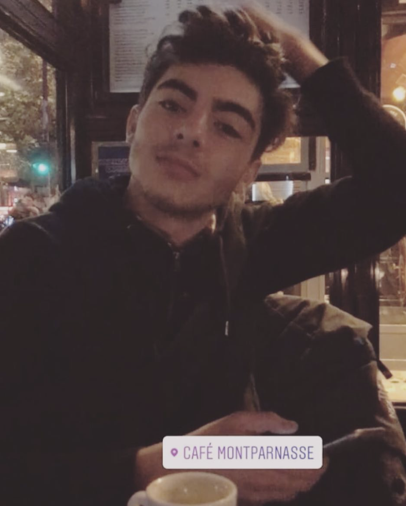

Lucas Abijmil
Étudiant en double-licence "Mathématiques et Informatique" à l'UFR de Paris Descartes. Adepte de l'autoformation.

Mes hobbies :
- Tennis
- Football
- Jeux-vidéos
Diplômes
- Brevet des collèges : mention assez bien (2013)
- Baccalauréat Scientifique : mentions assez bien (2017)
Mes compétences en programmation
- language C (niveau intermédiaire)
- programmation fonctionnel (CAML)
- HTML et CSS (pour bientôt)
Merci d'avoir lu mon cv :)